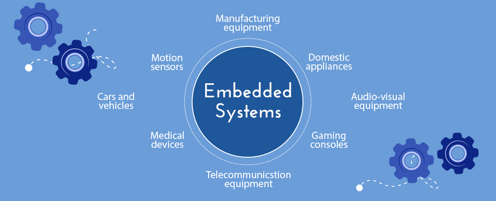
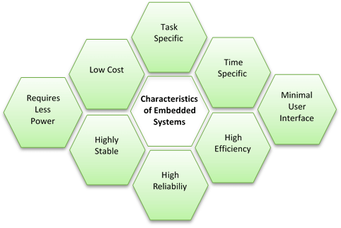
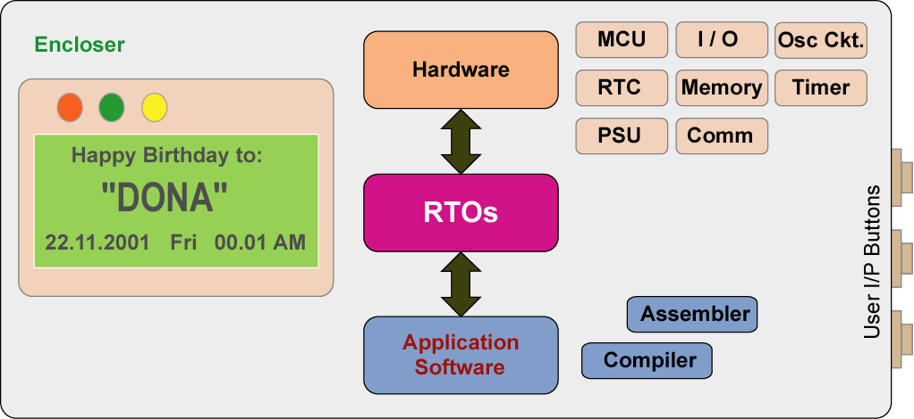
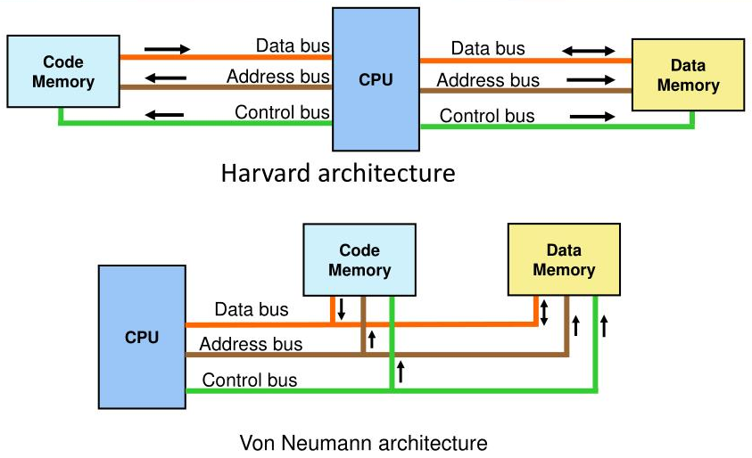
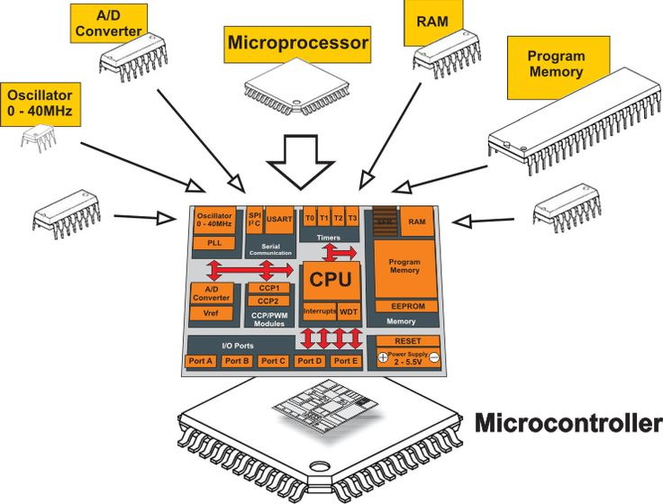

This is the first in a long line of tutorials aimed to provide a beginners guide
and tutorial based around the Atmel 8051 Microcontroller. It will show you,
through examples and projects, how to program and provide functions for this
microcontroller and what the uses and applications are. Before we learn Embedded
System, lets learn: what is a System?
A system is an arrangement where all its component work according to the
specific defined rules. It is a method of organizing, working, or performing one
or more tasks according to a fixed plan. For example, a watch is a time displaying
system. Its components follow a set of rules to show time. If one of its parts
fails, the watch will stop working. So we can say, in a system, all its sub-components
depend on each other. Our talks about embedded system. An embedded system can be
thought of as a computer hardware system having software embedded in it. Our talks
about embedded system.
Embedded System
Fig: embedded system
An embedded system is typically some combination of hardware and software, either
fixed in function or programmable. An embedded system could be designed to support a
specific function or functions within a larger system. Examples include industrial
control systems and machines, automobiles, military systems such as avionics and
weapons system, medical equipment, consumer products, smartphones, and building
automation.
Characteristics of an Embedded System :
Fig: Embedded System Characteristics
Components of an Embedded System :
Fig: Basic Components of an Embedded System
An embedded system has three major components as below:
Hardware : An embedded system uses a hardware platform to perform the operation.
Hardware of the embedded system is assembled with a microprocessor/microcontroller. It has the
elements such as input/output interfaces, memory, user interface and the display unit.
Application Software : The software of an embedded system is written to execute a particular
function. It is normally written in a programming language (Assembly, C, Python or such) and
then compiled down to offer code that can be stuck within a non-volatile memory in the hardware.
RTOS: A Real Time Operating System, commonly known as an RTOS, is a software
component that rapidly switches between tasks, giving the impression that multiple programs are
being executed at the same time on a single processing core. It offers scheduling, Priority,
Multitasking, Memory-Data-Object-Class Management, Library Management etc.
Processors
Processor is the heart of an embedded system as it is responsible for interpreting most of
computers commands. It is the basic unit that takes inputs and produces an output after
processing the data. For an embedded system designer, it is necessary to have the knowledge
of both microprocessors and microcontrollers.
A processor has two essential units:
Control unit: This unit in processors performed the program flow control
operation inside an embedded system. The control unit also acts as a fetching unit for
fetching the set of instructions stored inside a memory.
Execution unit: This unit is used for execution the various tasks inside
a processors. It mainly comprises of arithmetic and logical unit (ALU) and it also include
a circuit that executes the instruction sets used to perform program control operation inside
processors. A processor runs the cycles of fetch and executes the instructions in the same
sequence as they are fetched from memory.
Processor Architecture
Fig: Harvard and Von Neumann
Von Neumann Architecture
The Von Neumann architecture was first proposed by a computer scientist John Von Neumann.
In this architecture, one data path or bus exists for both instruction and data. As a result,
the CPU does one operation at a time. It either fetches an instruction from memory, or
performs read/write operation on data. So an instruction fetch
and a data operation cannot occur simultaneously, sharing a common bus.
Harvard Architecture
The Harvard architecture offers separate storage and signal buses for instructions and data.
This architecture has data storage entirely contained within the CPU, and there is no access
to the instruction storage as data. Computers have separate memory areas for program
instructions and data using internal data buses, allowing simultaneous access to both
instructions and data.
Programs needed to be loaded by an operator; the processor could not boot itself.
In a Harvard architecture, there is no need to make the two memories share properties.
Types of Processors
Processors can be of the following categories:
Application Specific System Processor(ASSP): ASSP is application dependent
system processor used for processing signal of embedded system. Therefore for different
application performing task a unique set of system processors is required.
Application Specific Instruction Processor(ASIP): ASIP is application
dependent instruction processors. It is used for processing the various instruction set inside
a combinational circuit of an embedded system.
General Purpose Processor (GPP):: GPP is used for processing signal from
input to output by controlling the operation of system bus, address bus and data bus inside
an embedded system.
Types of general purpose processor are:
Microprocessor - The microprocessor is a multipurpose, clock-driven,
register-based, digital integrated circuit that accepts binary data as input, processes
it according to instructions stored in its memory, and provides results
(also in binary form) as output.
Microcontroller - A microcontroller is a compact integrated circuit
designed to govern a specific operation in an embedded system. A typical microcontroller
includes a processor, memory and input/output (I/O) peripherals on a single chip.This is
the device will will continue to learn in deep.
DSP - Digital Signal Processing involves the interchanging of information
so that said information can be observed, analyzed, or transformed into a separate form of signal.
ASP - (Analog signal processing) processes the signals which are not
digitized. The examples of ASP systems include classical radio, TV, telephone, radar etc.
Components of Microprocessor
A microprocessor is an electronic component that is used by a computer to do its work.
It is a central processing unit on a single integrated circuit chip containing millions
of very small components including transistors, resistors, and diodes that work together.
Operations performed by microprocessor are adding, subtracting, comparing two
numbers and fetching the data from memory for transferring it from one place to another.
Fig: Components of a Processor
Arithmetic and Logic unit (ALU): ALU inside a microprocessor used to
perform the arithmetic and logic operation. It performs the logic operation on the data
stored inside a register.
Accumulator: It is a register inside which the intermediate arithmetic
and logical operation data is stored.
Working registers: It is a storage device used to store the data
inside a microprocessor in different address location.
Program counter: It is used for counting the number of program
executed inside a microprocessor.
Stack pointer: Stack pointer act as a pointer to the certain
address. It is a register used to store the address of the last program request
made by the processor inside a stack.
Clock circuit: It is used for generate the clock pulse required as
a reference signal for the microprocessor.
Interrupt circuit: It is used for generating the interrupt signal
when the higher priority process required to be served first on basis of priority
by microprocessor.
Microcontrollers
You can think of a microcontroller like a tiny computer. You can connect things,
like a small display, some buttons, a motor and some sensors. And you can put
programs onto it and run them.
Fig: Microcontroller and its inside
A microcontroller (MCU for microcontroller unit) is a small computer on a single
integrated circuit (IC) chip. It contains one or more CPUs (processor cores) along
with memory and programmable input/output peripherals. They are used for controlling
other portions of an electronic system, usually via a microprocessor unit (MPU),
memory, and some peripherals. These devices are optimized for embedded applications
that require both processing functionality and agile, responsive interaction with
digital, analog, or electromechanical components.
Types of Microcontrollers
Microcontrollers are divided into various categories based on memory,
architecture, bits and instruction sets. Following is the list of their types:
Bit :
Based on bit configuration, the microcontroller is further divided into three categories.
8-bit microcontroller: This type of microcontroller is used to execute
arithmetic and logical operations like addition, subtraction, multiplication division, etc.
For example, Intel 8031 and 8051 are 8 bits microcontroller.
16-bit microcontroller:This type of microcontroller is used to perform
arithmetic and logical operations where higher accuracy and performance is required.
For example, Intel 8096 is a 16-bit microcontroller.
32-bit microcontroller:This type of microcontroller is generally used
in automatically controlled appliances like automatic operational machines, medical
appliances, etc.
Memory :
Based on the memory configuration, the microcontroller is further divided into two categories.
External memory microcontroller: This type of microcontroller is designed
in such a way that they do not have a program memory on the chip. Hence, it is named as
external memory microcontroller. For example: Intel 8031 microcontroller.
Embedded memory microcontroller: This type of microcontroller is designed
in such a way that the microcontroller has all programs and data memory, counters and timers,
interrupts, I/O ports are embedded on the chip. For example: Intel 8051 microcontroller.
Instruction Set :
Based on the instruction set configuration, the microcontroller is further divided into two categories.
CISC: CISC stands for complex instruction set computer. It allows the user to
insert a single instruction as an alternative to many simple instructions.
RISC: RISC stands for Reduced Instruction Set Computers. It reduces the
operational time by shortening the clock cycle per instruction.
Applications of Microcontrollers
There are so many things you can do with a microcontroller. The possibilities are endless!
You could build a robot. Or an MP3-player. Or a cellphone. Or a door-lock that unlocks your
door automatically when you enter a code on your smart phone.
Microcontrollers are widely used in various different devices such as

 Fig: Components of a Processor
Fig: Components of a Processor